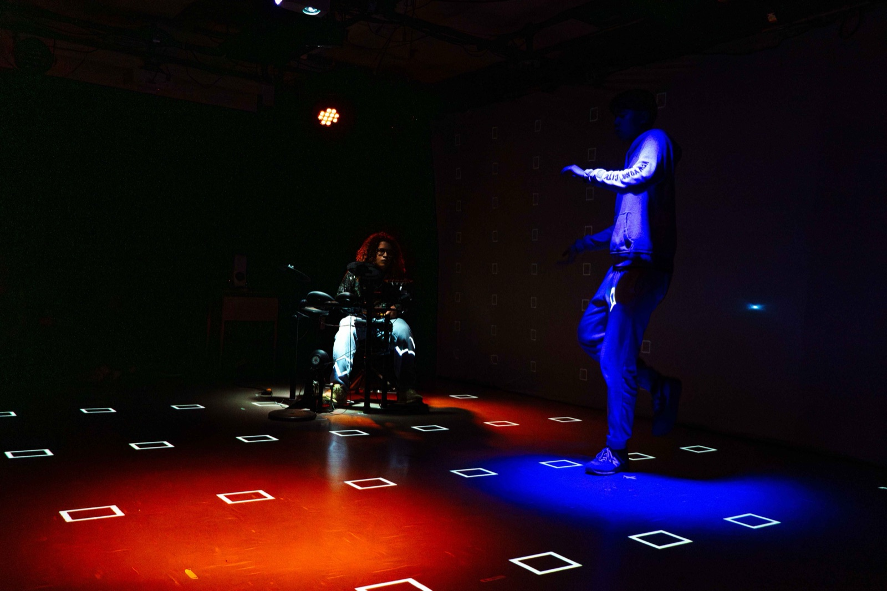
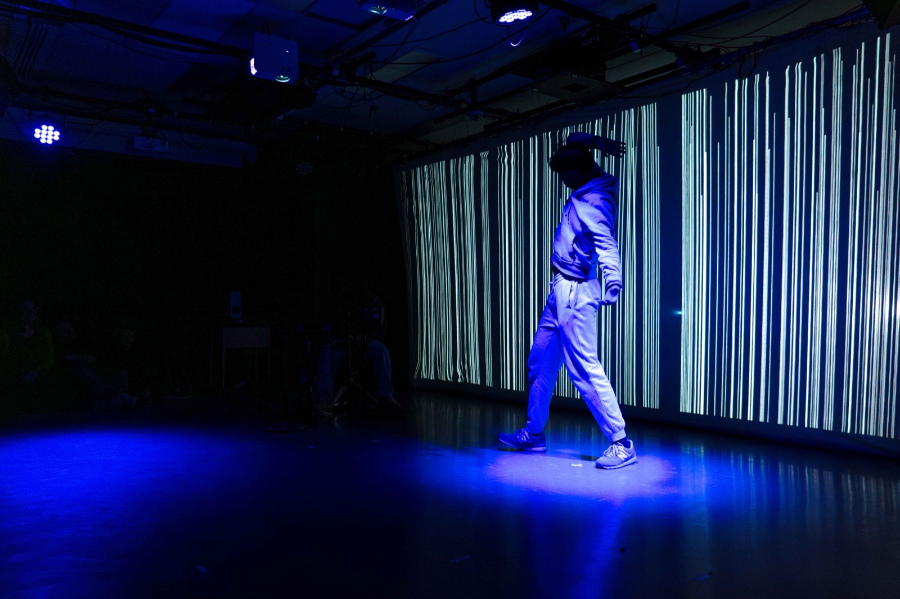
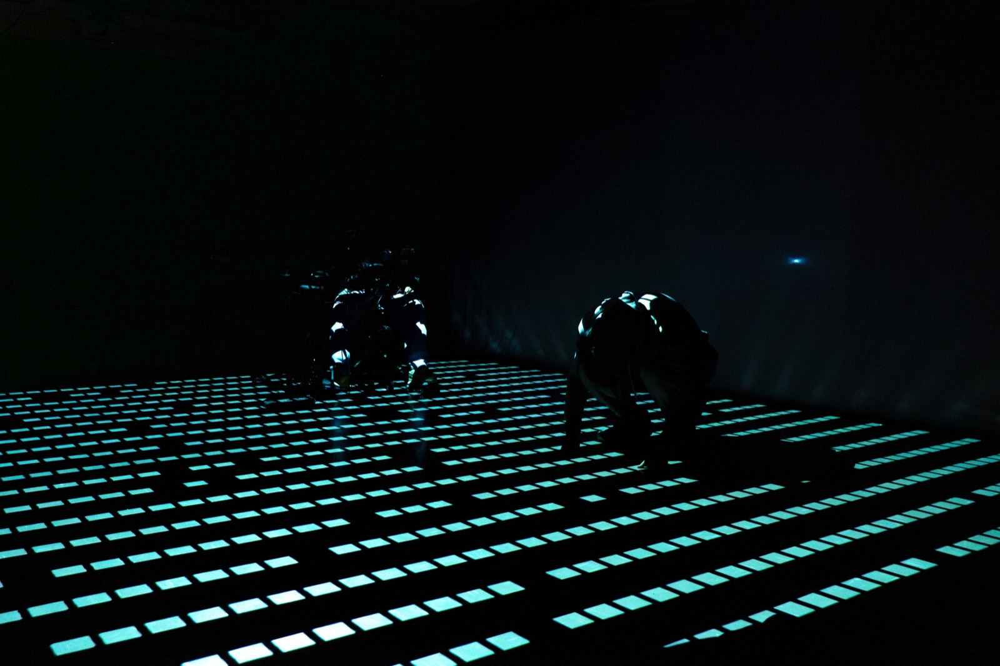
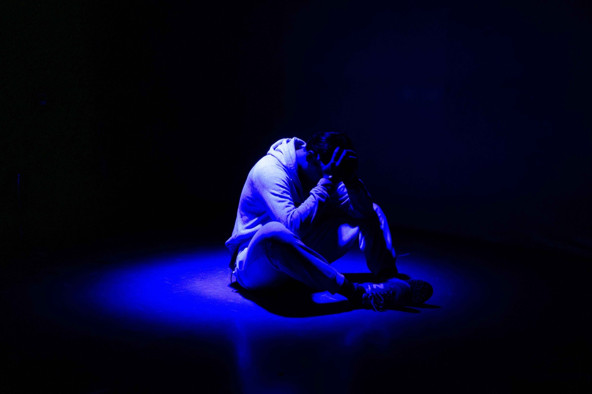
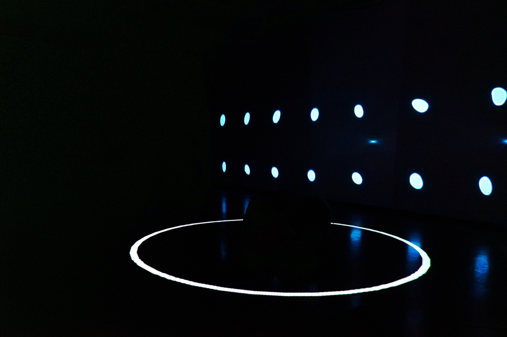
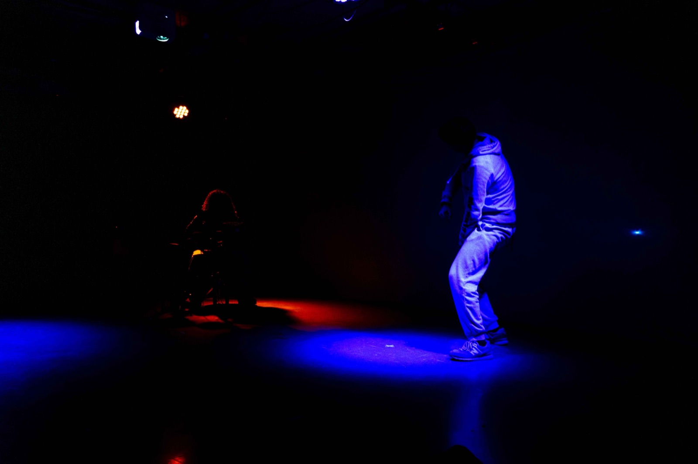

Cliquer pour regarder
Installations interactives
(6/22)
Une performance où le son, le mouvement et l'image se répondent en temps réel, entre rigidité et fluidité.
Floating On Rocks est une performance interactive conçue et créée par Jean-Christophe Zephir, Meryem Berbiche, Ugo Jutras et Sasha Bédard. Elle invite à explorer un dialogue entre l'humain et la technologie.
Le son, le mouvement et l'image ne sont pas juxtaposés : ils se fondent en une seule entité, en perpétuelle évolution.
(Fonctionnement)
Comment la performance se construit en direct.
Comme directeur sonore, j'ai conçu une palette percussive : des textures brutes et tranchantes jusqu'à des sons plus ouverts et expérimentaux, en contraste avec les variations du mouvement. Des sons de batterie sont traités et mixés en direct avec la bande sonore.

La batterie, branchée en MIDI, modifie les visuels projetés en temps réel, et les capteurs portés par le danseur les font évoluer. J'ai participé à faire communiquer les logiciels et les ordinateurs entre eux.


Jory Trabajada à la danse et Andy Martinez Diaz à la batterie.


Images8 photos
